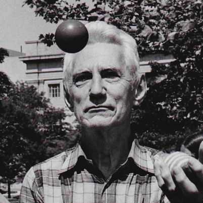
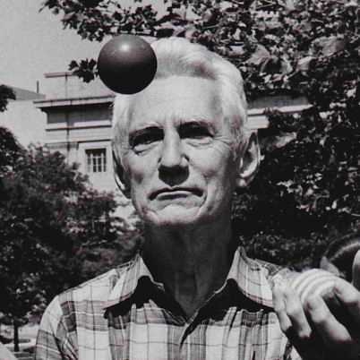
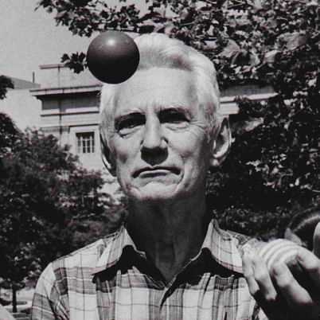
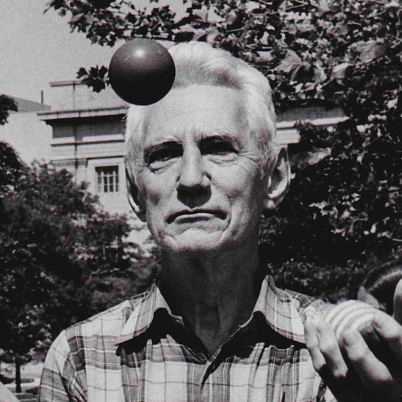

 

Shannon kept on tinkering and inventing throughout his life, devising a flame-throwing trumpet, rocket-powered Frisbee, Rubik's cube solver, and chess-playing robots. He also built what he called the ultimate machine: a small, nondescript box with a single switch. Flipping the switch caused a tiny hand to emerge, reverse the switch, and return to rest inside the box, its one function to turn itself off again. Completely useless.
Shannon designed the Minivac 601, a digital computer trainer to teach business people about how computers functioned. It was sold by the Scientific Development Corp starting in 1961.
Shannon would learn that he and Thomas Edison were distant cousins, connected through John Ogden, an early settler in New Jersey, according to his Massachusetts Institute of Technology obituary.